Personal learning / vibe coding experiment · Non-commercial
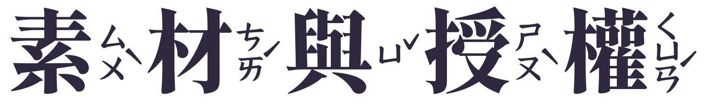
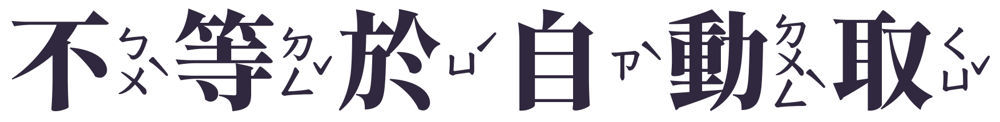
“Come Play with Me” — Kevin MacLeod (incompetech.com).
Licensed under Creative Commons Attribution 4.0.
User-supplied Chosic MP3 copied unchanged; playback volume and temporary voice ducking only.
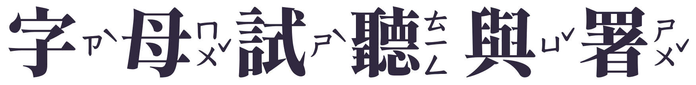
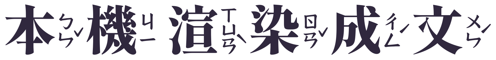 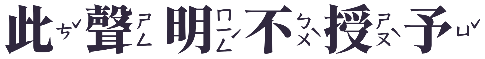
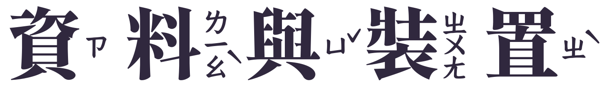
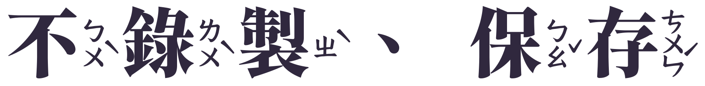
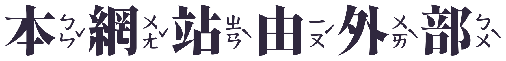 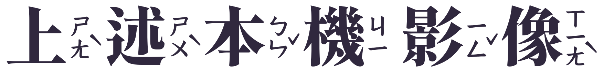
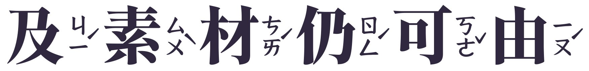 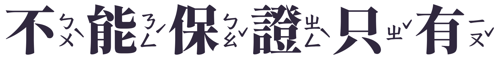
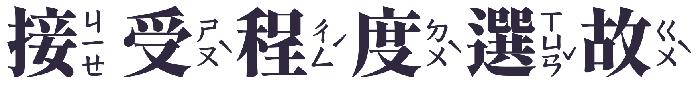 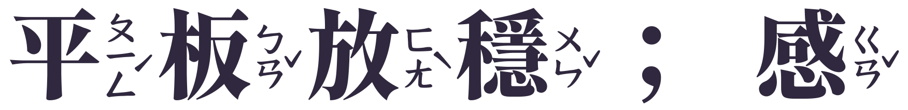